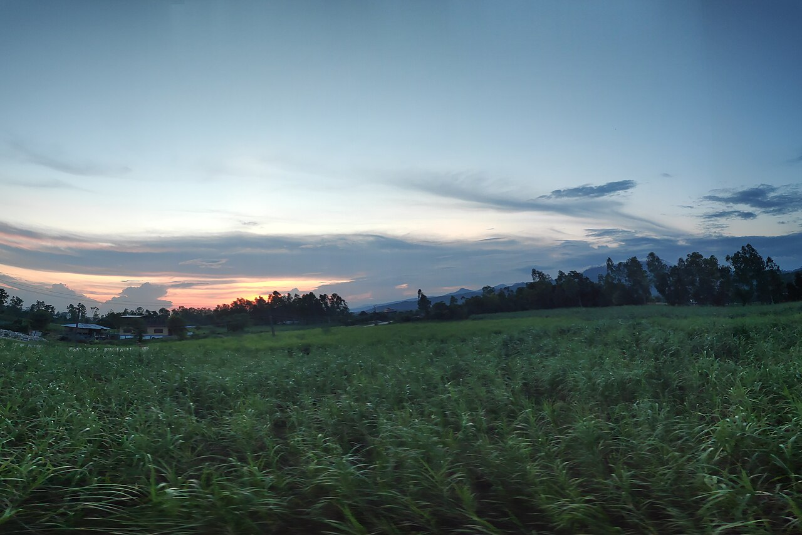
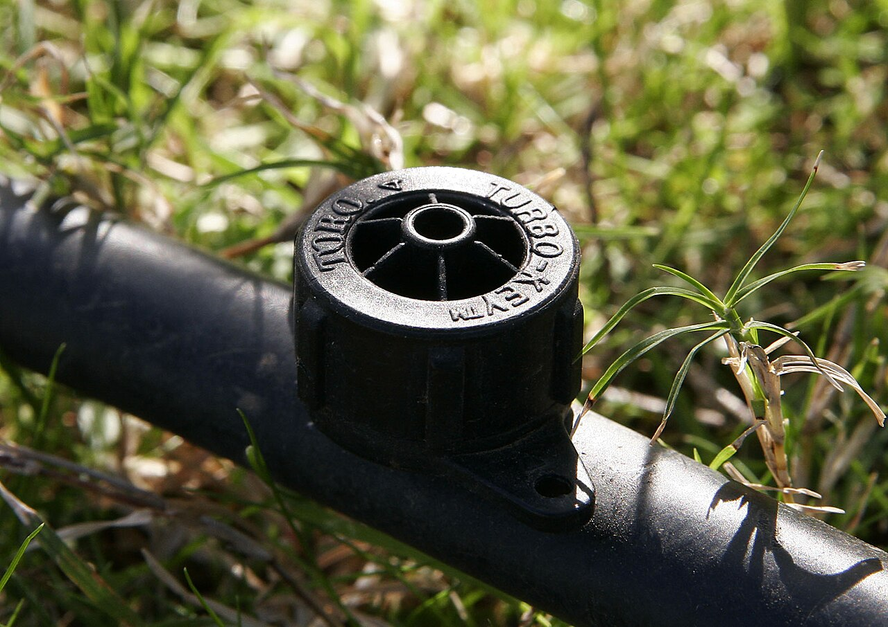
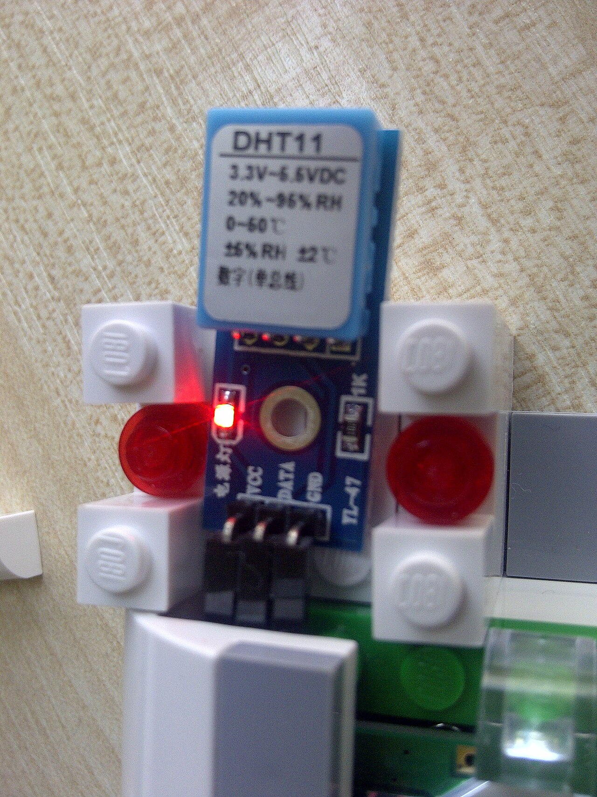
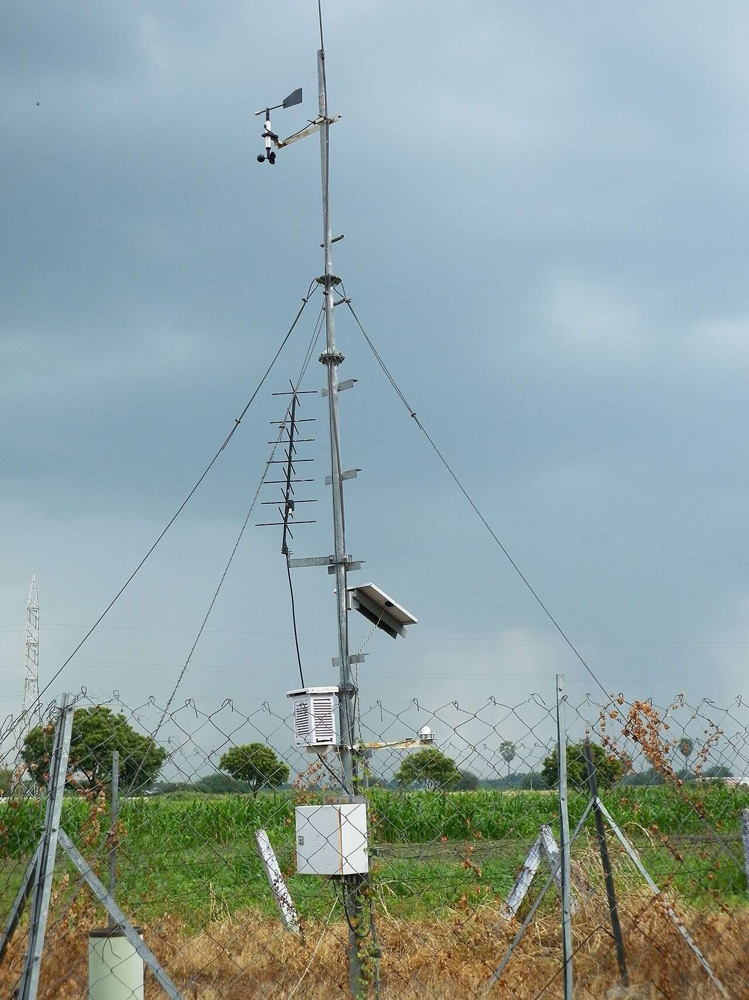
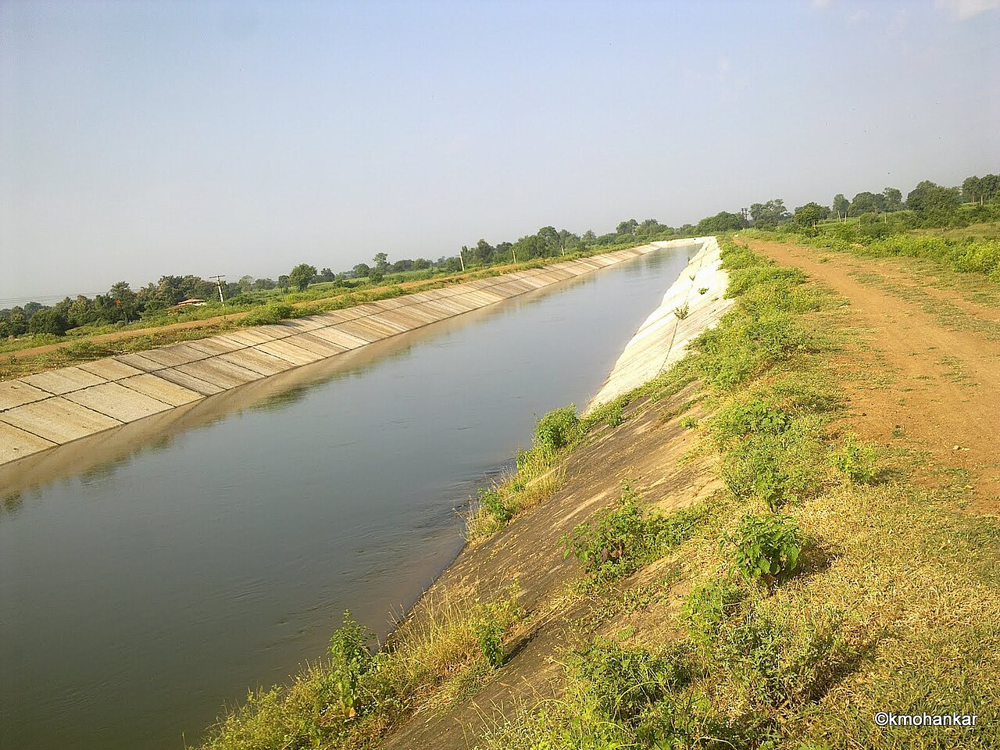
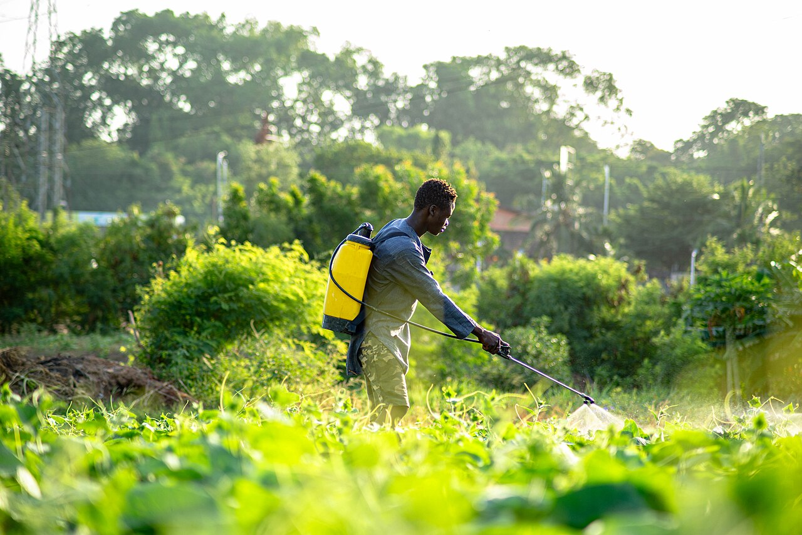

Farm Images






Healthy Sugarcane Crop
A well-maintained sugarcane field at the grand growth stage. The plants are tall and green which means irrigation scheduling and nutrient management has been done properly.
Drip Irrigation System
Drip lines laid along the crop rows delivering water directly to the root zone. This method saves almost 40-50% water compared to flood irrigation and is widely used in sugarcane fields around Sameerwadi.
Temperature and Humidity Sensor
A small digital sensor fixed near the crop rows. It sends temperature and humidity readings to the central system every 15 minutes using a wireless node. The advisory combines these readings with soil data to decide when to irrigate.
Automatic Weather Station
Installed at the KIAAR field centre. It records temperature, relative humidity, wind speed, rainfall and solar radiation. This data is merged with IMD forecast to predict irrigation need for the next 3 days.
Canal Water Supply
Canal water reaches many Sameerwadi fields through branch canals. The portal checks canal release days before advising extra drip, so farmers never pay for water twice.
Farmer in Field
A farmer sprays the crop early in the morning when the air is cool. Field visits like this confirm what the sensors report from the plots.